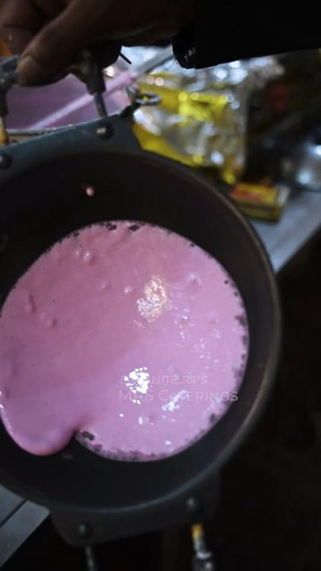
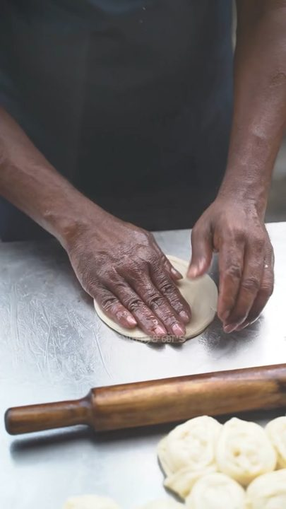
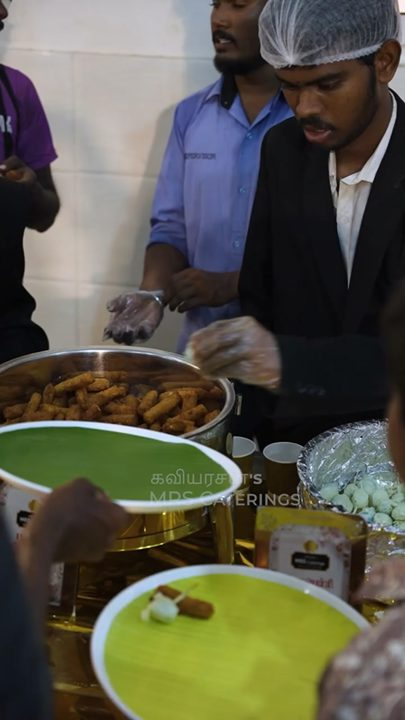
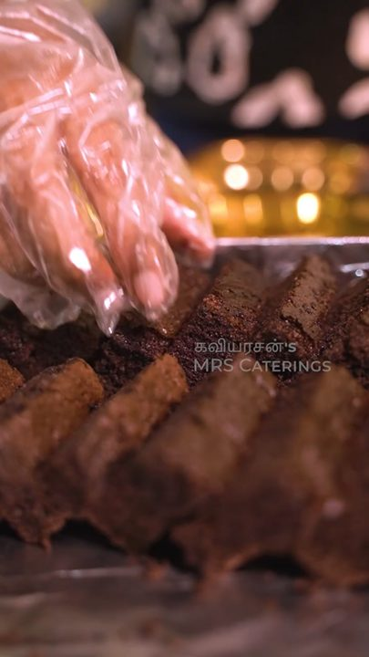

Over 150 dishes to build from, including menus from recent events. Every menu is planned with you around your guests, your customs and your diet needs.
From recent events
- Elaneer payasam (tender coconut)
- Mint mojito
- Nannari sarbath
- Watermelon juice
Traditional
- Elaneer shakes
- Rose milk
- Masala mor (spiced buttermilk)
- Panakam (jaggery-ginger)
Mocktails
- Blue curacao mojito
- Watermelon mint cooler
- Virgin pina colada
- Green apple fizz
- Mango slush (seasonal)
Hot beverages
- Kumbakonam degree coffee
- Ooty masala tea
- Sukku malli coffee


Morning spread
- Paruthipal halwa
- Venthaya idli (fenugreek)
- Kushboo idli
- Kanchipuram idli
- Milagu ven pongal
- Ghee pongal
- Rava kitchadi
- Poori with channa masala
- Medhu vadai
- Masala vadai
Dosa, uthappam & appam
- Masala dosa
- Onion cheese masala dosa
- Podi ghee roast
- Beetroot dosa
- Cheese dosa
- Onion carrot uthappam
- Garlic chutney dosa
- Onion rava dosa
- Veg omelette
- Live appam with coconut milk
- Idiyappam with coconut milk
Live tiffin counters
- Jasmine idli with four chutneys
- Sangu poo idiyappam (blue string hoppers)
- Karaikudi kuzhi paniyaram (made live)
- Kerala poli, coconut and paruppu (made live)
Chutneys & sambar
- Sambar
- Coconut chutney
- Tomato chutney
- Mint coriander chutney
- Pudina paruppu chutney
- Groundnut chutney
To end
- Vetrilai pakku (betel leaf and nut)
- Mineral water 300 ml


Sweets & starters
- Rose petal burfi
- Dry fruit chikki
- Keerai bonda
- Gobi 65
- Vazhaipoo vadai
- Appalam
- Jaggery-coated banana chips
- Vadai
Rice
- Steamed ponni rice
- Basmati steamed rice
- Brinji rice
- Ghee rice
- Raw mango rice
- Kalyana puliyodharai (tamarind rice)
- Curd rice
- Kambu curd rice
Sambar, rasam & kuzhambu
- Kongu Nadu sambar
- Karaikudi sambar
- Brinjal sambar
- Kalyana rasam
- Tomato rasam
- Pepper rasam
- Milagu puli rasam
- Vatha kuzhambu
- Okra puli kuzhambu
- Mor kuzhambu
- Poosani mor kuzhambu (ash gourd buttermilk)
Poriyal & kootu
- Malabar avial
- Potato curry fry
- Potato pepper curry
- Carrot beans poriyal
- Mixed vegetable poriyal
- Avarai-peanut poriyal
- Chow chow kootu
- Pachai payir kadaisal (green gram)
Curd, pickle & finish
- Curd
- Mango pickle
- Narthangai (citron) pickle
- Mor milagai
- Mineral water 300 ml
Payasam
- Karuppu kavuni payasam (black rice)
- Kulfi payasam
- Semiya payasam
- Paruppu pradhaman


Grills & tandoor (veg)
- Caramelised grilled pineapple
- Hariyali paneer tikka
- Paneer tikka
- Tandoori baby corn
- Spiced pineapple grill
Indo-Chinese (veg)
- Gobi Manchurian (dry)
- Crispy chilli mushroom
- Sizzling dragon paneer
- Chilli idli
- Veg corn nuggets
Chaat & street food
- Pani puri (mint, garlic)
- Dahi papdi chaat
- Sev puri
- Samosa chaat
- Live Bombay pav bhaji
Continental
- White sauce penne pasta
- Red sauce arrabbiata pasta
- Live thin-crust woodfired pizza
- Garlic bread
Strawberry ice balls & more
- Strawberry ice balls
- Bread malpua
- Tomato sauce


Biriyani
- Saivam (veg mock-meat) mutton biriyani
- Veg mutton biriyani
- Seeraga samba mutton biriyani
- Thalassery chicken biriyani
- Ambur chicken biriyani
Veg mock-meat
- Veg mutton pallipalayam
- Kothu parotta
- Nool parotta with vegetable salna
- Paneer salna
Chicken starters & curries
- Tandoori chicken sizzlers
- Chicken tikka
- Hariyali chicken kabab
- Dragon chicken
- Sizzling pepper chicken
- Chicken pallipalayam (dry)
- Chicken chukka
- Chettinad chicken curry
- Nattu kozhi varuval (country chicken)
Mutton & seafood
- Madurai mutton chukka
- Mutton kola urundai
- Traditional mutton thokku
- Fish tikka
- Vanjaram fish fry (kingfish)
- Golden fried prawns
- Malabar fish curry
- Mango fish kuzhambu
- Prawn thokku


Starters
- Strawberry ice balls
- Bread malpua
- Veg corn nuggets
- Spiced pineapple grill
- Hariyali paneer tikka
- Chilli idli
Mains
- Tender-coconut mini thattu idli
- Mango fish kuzhambu
- Veg mutton biriyani
- Curd pachadi
- Kothu parotta
- Paneer salna
Dosa varieties
- Veg omelette
- Garlic chutney dosa
- Onion rava dosa
Chutneys & sambar
- Coconut chutney
- Groundnut chutney
- Pumpkin (arasanikkai) sambar
Finishers
- Steamed rice
- Drumstick-leaf (murungai keerai) rasam
- Kambu curd rice
- Mor milagai
- Pickle
Grama Tea Kadai (village tea stall)
- Meter sukku coffee
- Sukku malli coffee
- Dum tea
- Bun, butter and jam
- Medhu vadai
- Retro bakery biscuits
Evening 4 to 6 pm
- Vazhaikkai (banana) bajji
- Onion ring bajji
- Chutney
- Tea stall
Take-home sweets
- Laddu
- Mundhiri (cashew) cake
- Mixture, 5 kg packs


Sweets & halwa
- Kandi halwa
- Elaneer halwa
- Asoka halwa
- Kasi halwa
- Milk peda
- Milk kozhukattai
- Chocolate ragi cake
Western & chilled
- Double ka meetha (bread pudding)
- Gulab jamun with rabri
- Malpua
- Fruit carpaccio
- Fruit salad
- Ice cream
Live counters
- Live nitrogen ice cream
- Rolling ice cream (live stone counter)
- Live matka kulfi
- Triangle chocolate dosa
To finish
- Panangkarkandu paal (palm candy milk)
- Beeda

Cuisines: South Indian, other Indian regional styles, Continental and Chinese. Vegan, vegetarian and gluten-free options are available. "Veg mutton" dishes are vegetarian mock-meat and contain no meat.